Project Viewer#
The Project Viewer is where you can create New projects, open previous projects and images or example projects, and save your current project.
This view is also where you can categorize your images and perform classification and segmentation tasks.
Overview#
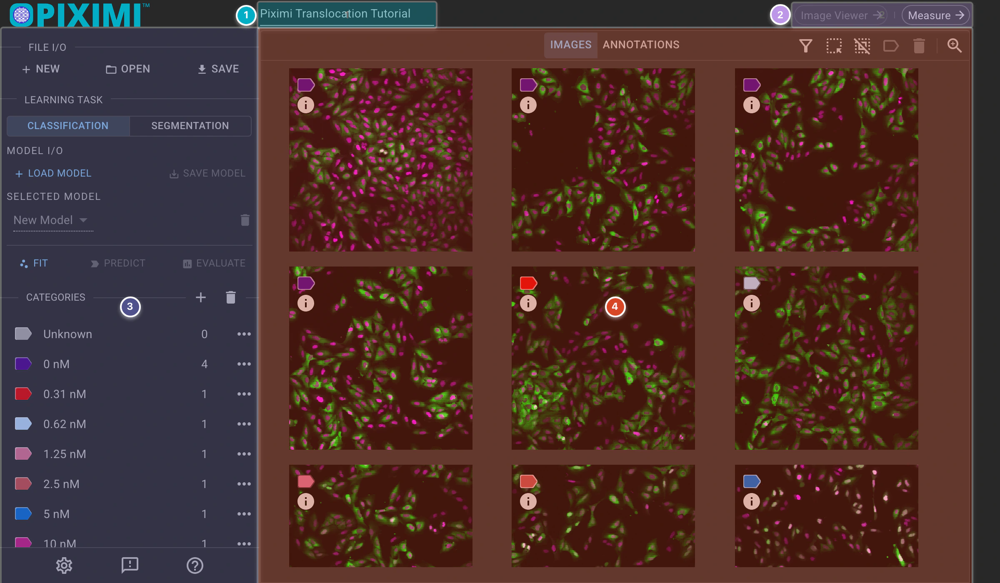
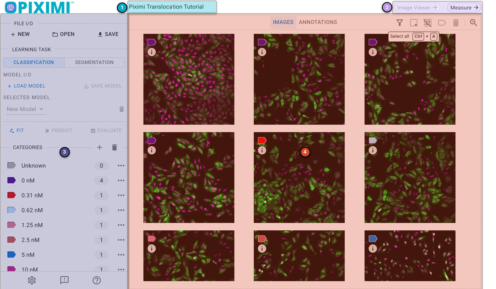
Project Name - Update the name of your project. Saved filenames will default to the project name.
Navigate to Image Viewer / Measurements:
Image Viewer: After selecting images or objects, navigate to the Image Viewer to view, annotate, or adjust the selected images. Selecting an object, or objects, and navigating to the Image Viewer will load the image the object belongs to, and highlight the object(s).
Measure: The Measurements View operates on all images/objects in the project, so no selection is necessary.
Project Drawer: This is where you perform tasks like loading and saving projects, run machine learning models (classification or segmentation) and create/edit/delete categories.
Image / Annotation Grid: Switch between viewing the images or annotations in the project.
Project Drawer#
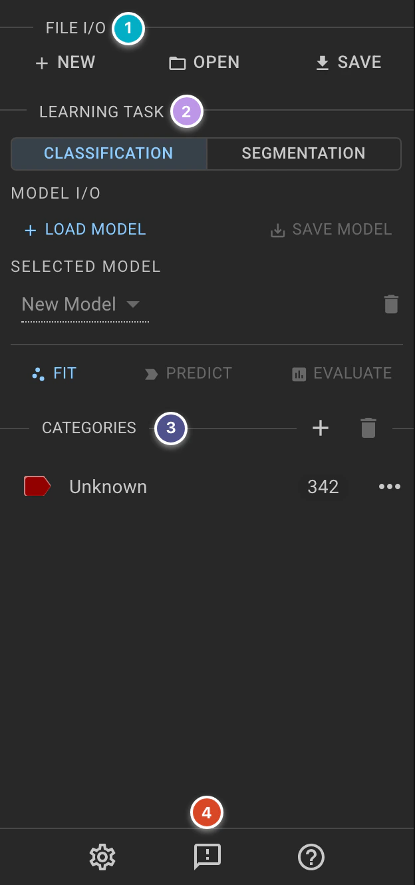
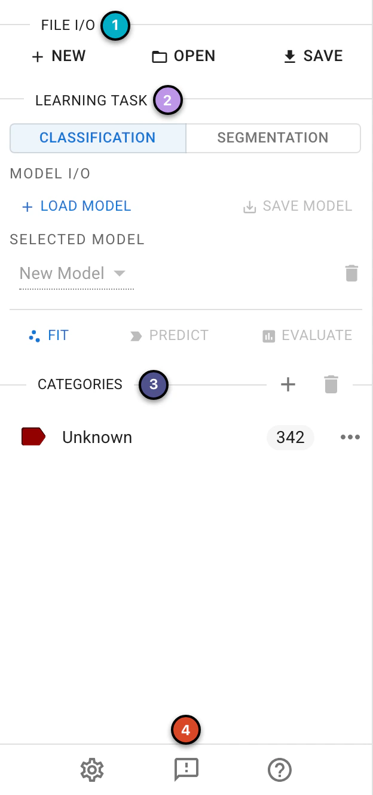
1. File I/O#
Project Creation: Clicking NEW opens a new project. You will be prompted to input a new project name, and the current project will be replaced with a blank one.
Open a Project: Clicking OPEN opens a menu which allows you to:
Open a previously saved project (
.zipor.zarr)Open one of Piximi’s provided example projects (see here for information about the datasets)
Open a new image (PNG, JPEG, TIFF, DICOM, BMP, or HEIF formats). Piximi requires all image in the project to have the same number of channels
Save Project: Clicking SAVE saves the project as a compressed
.zipfile containing a.zarrdirectory with the project data as well as any trained classifiers used in the project.
2. Learning Task#
This section contains the deep learning functionality of piximi (Classification and Segmentation), and is explained in detail in the classification and segmentation pages.
3. Categories#
This section contains the categories for the items in the currently viewed grid. You can create, edit, and delete categories here.
The images along with each kind are associated with an “Unknown” category. This is the default category of newly loaded images as well as segmented objects. Deleting a category will recategorize the associated items as “Unknown”.
4. App Controls#
Pinned to the bottom of the drawer, this section contains the app settings, functionality to report issues within the app to the GitHub project repo, and activation of the in-app help context.
App Settings
Light/Dark Mode
Image selection border width/color
Sound Effects
Show image info when scrolling
Help Context
When activated, sections of the app which are associated with help information will be highlighted. Hovering over these sections will update the help dialog in the lower left of the screen with the relevant information. Hold down the shift key and click a section to lock the information dialog to that section.
Image/Object Grid#
The grid has two views, toggled at the top: Images and Annotations.
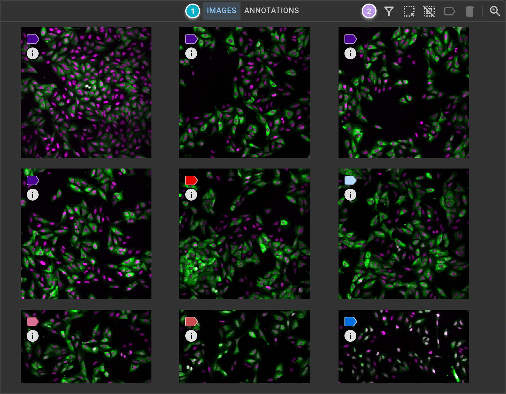
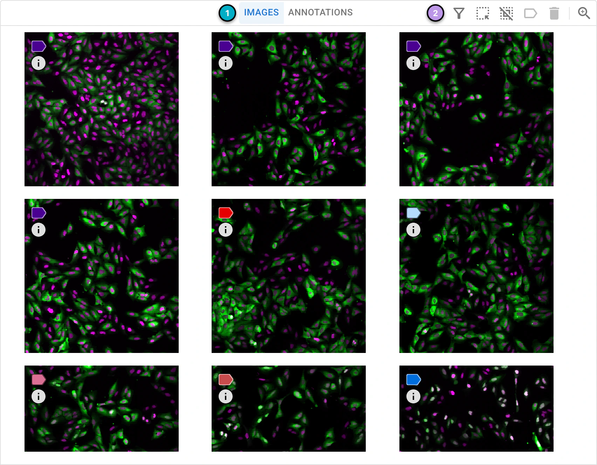
Images view – shows whole images.
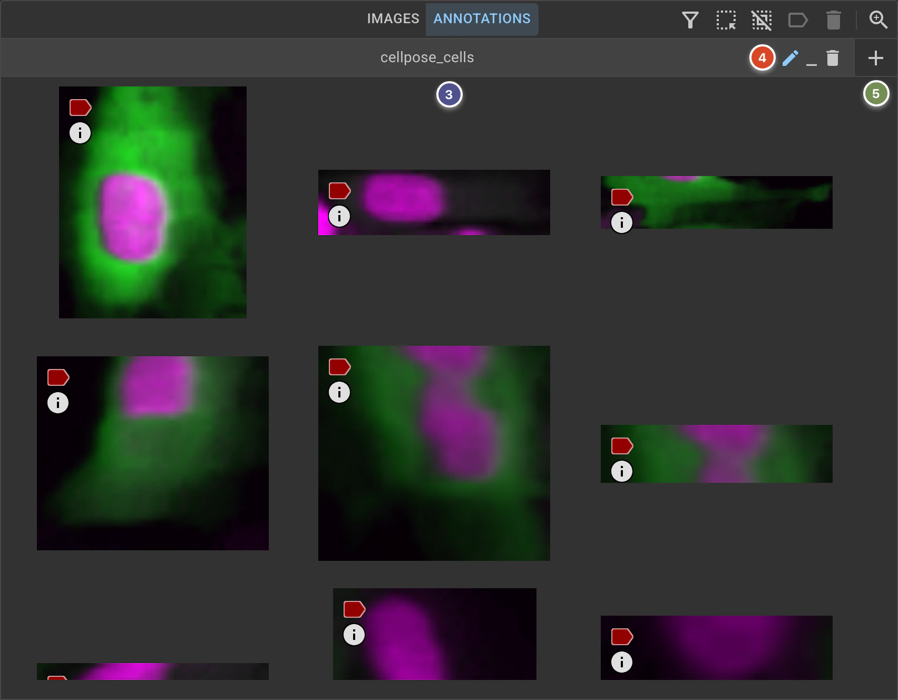
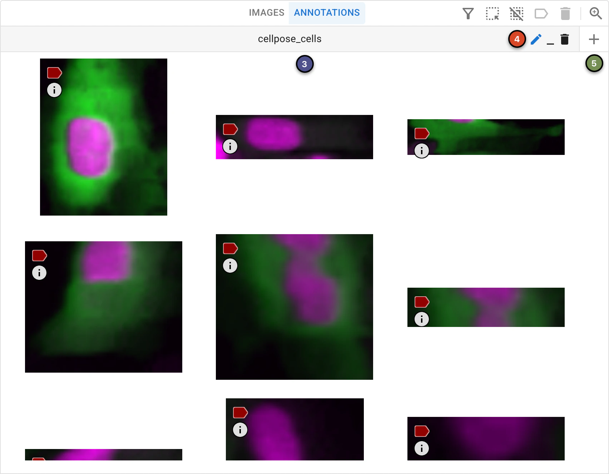
Annotations view – once a project has annotations, this view splits the grid by Kind Tabs (see below).
Tip
Want to change the colors or display settings used on the images?
You can do so by selecting one or more images and then opening them in the Image Viewer
View Toggle: Switches the items in the grid between images and annotations. The Annotations toggle is disabled unless the project has at least one annotation/object.
Grid Actions: Control what you see in the grid and act on selected items.
Sort | Filter – Choose the order in which your images/objects appear in the grid, and filter which items are shown. Sort options are by:
File Name
Category
Random
Image Name (the image name may be updated by the user; the default is the file name)
Select all – Select every image/object. The number of selected items is shown in a badge on the button.

 Deselect all – Clear the current selection.
Deselect all – Clear the current selection.
 Categorize – After selecting a subset of images/objects, use this control to apply an available category to the selection.
Categorize – After selecting a subset of images/objects, use this control to apply an available category to the selection.Delete selected – Delete the selected images/objects.
Zoom – Change the size of the items in the grid.
The Sort | Filter and Categorize popovers look slightly different in each view, since the available options depend on what is being shown:
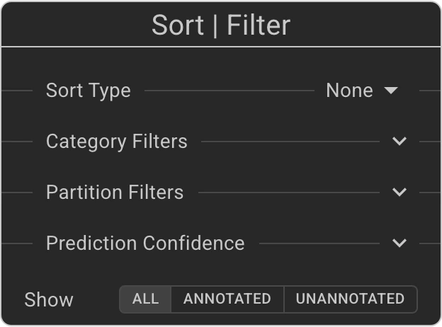
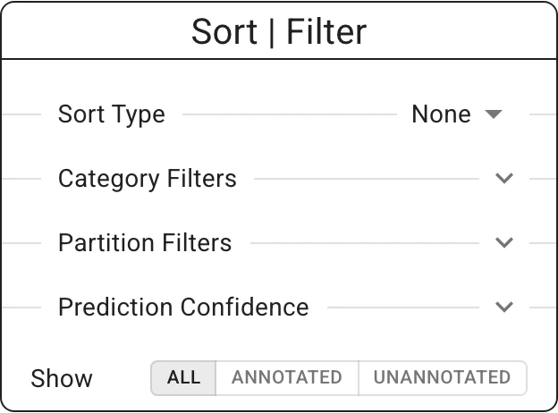
Images view: Images can be filtered on whether they contain segmented objects or not
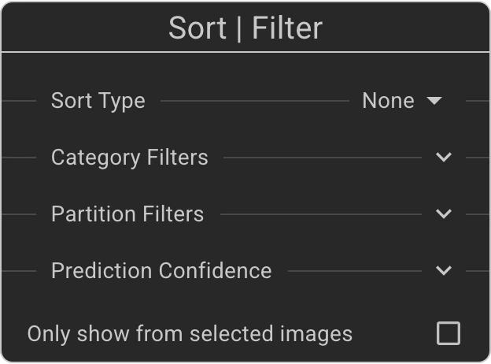
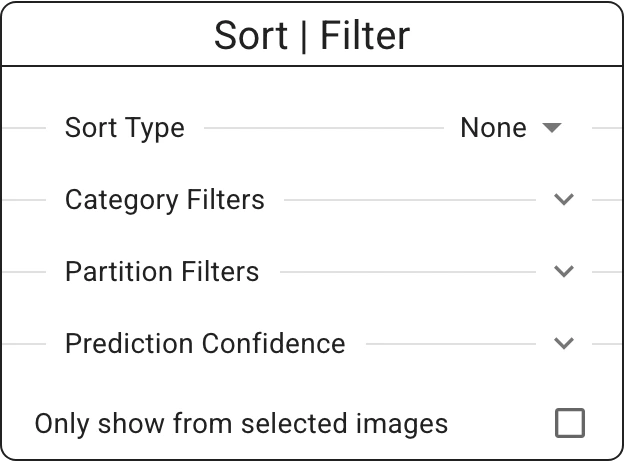
Annotations view: Annotations can be filtered on images selected in the “Images view”
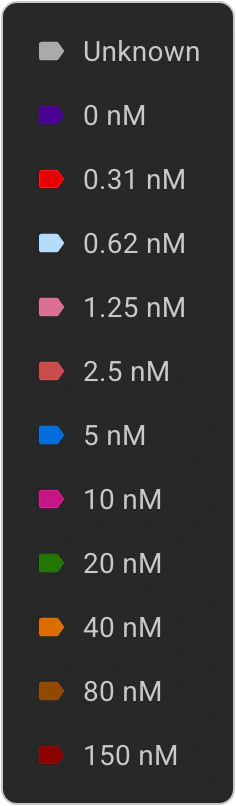
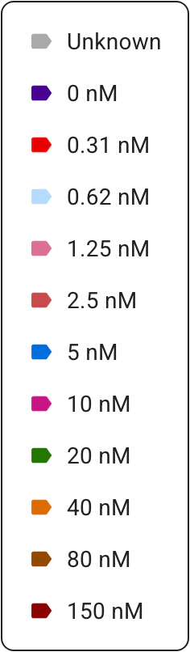
Images view: Select from a list of image categories
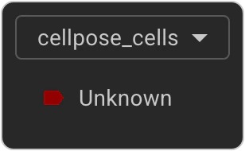
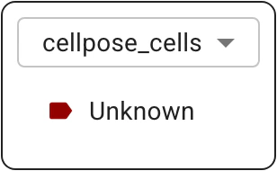
Annotations view: Annotations can be categorized across Kinds. Select a Kind from the drop-down then select a category from the list. The annotation’s Kind will be updated as well.
Kind Tabs
Only in the Annotations view
Kind Tabs only appear once you switch to the Annotations view above – they aren’t part of the Images view.
Piximi groups the objects into what we call “Kinds”. Kinds are essentially a supercategory. Like categories there is a default Unknown kind which exists to hold annotations which have been disassociated with a specific kind. This would occur if for instance an object’s kind was deleted by the user.
Additional kinds can be created, edited and deleted, and each kind has its own set of associated categories.
For example, an image may contain “Nuclei” and “Cell Membrane” objects. In this example the project has two kinds – “Nuclei”, and “Cell Membrane”. The object can then be grouped by category, for example the objects of kind “Nuclei” can be categorized as “Healthy” or “Infected”.
A simple structure could look like this:
kinds:{
Nuclei:{
categories:[Healthy, Infected, ...],
},
Cell Membrane:{
categories:[...]
}
...
}
Each Kind tab contains functionality for editing the kind name, minimizing the kind (removing the kind from the visible tabs) and deleting the kind.
Kind Actions: Hovering over a Kind’s tab shows the actions that can be performed on the Kind:
Edit – Change the name of the Kind.
Minimize – Remove the Kind’s tab from the view
Delete – Delete the Kind
Add/Restore Kinds: The button allows you to create a new Kind, or restore a previously minimized Kind.